Imagens a partir de Dois Espelhos
Yi-Ting Tu
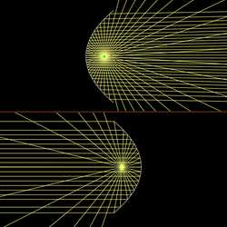
Espelho Parabólico
Paul Falstad
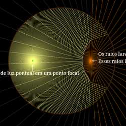
Espelho Hiperbólico
Stas Fainer
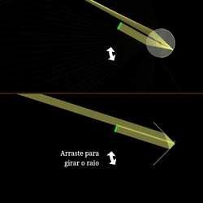
Retrorefletores
Stas Fainer, Yi-Ting Tu
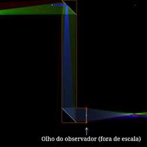
Periscópio
Stas Fainer
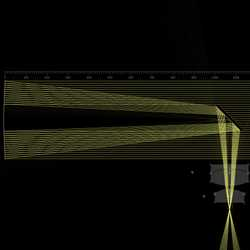
Telescópio Newtoniano
Matteo Ricci Cipolloni
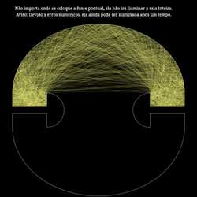
Sala iniluminável de Penrose
Vincent Fan, Yi-Ting Tu
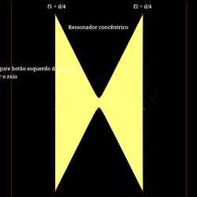
Cavidade óptica de dois espelhos
Stas Fainer
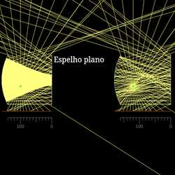
Ressonador plano-côncavo
Mikhail Kochiev
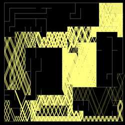
Solução de labirinto
Stas Fainer, Yi-Ting Tu
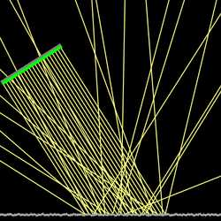
Reflexões Especulares e Difusas
Steve Stonebraker
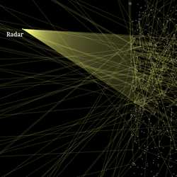
Contramedida de chaff
Stas Fainer, Yi-Ting Tu
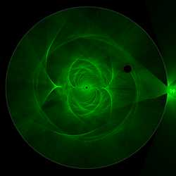
Cáusticas de uma Esfera Refletiva
Georg Nadorff
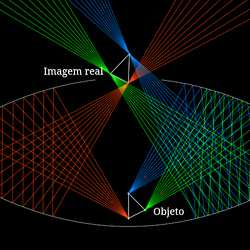
O Mirascópio
Mario Petitclerc

Reflexão e Refração
Paul Falstad

Reflexão Interna
Paul Falstad
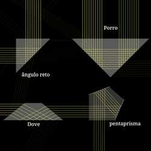
Prismas
Paul Falstad
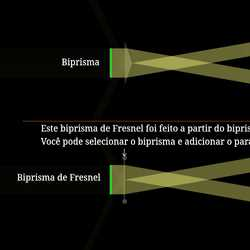
Diretores de Raio
Stas Fainer
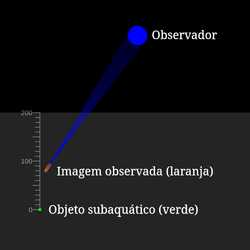
Profundidade Aparente
Yi-Ting Tu
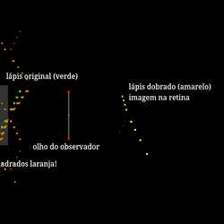
Lápis Dobrado
Stas Fainer
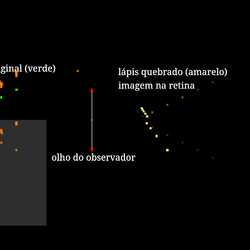
Lápis Quebrado
Stas Fainer

Dispersão cromática
Yi-Ting Tu
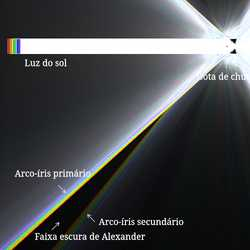
Arco-íris
Yi-Ting Tu

Desvio angular mínimo
Stas Fainer
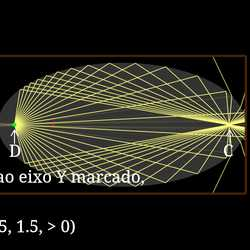
Pontos aplanáticos
Stas Fainer
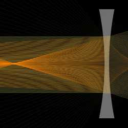
Lente côncava
Paul Falstad

Lente Convexa
Paul Falstad
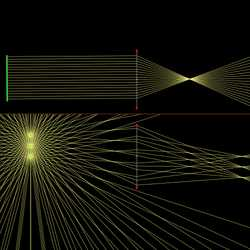
Imagens de Lente
Paul Falstad
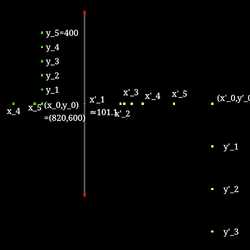
Magnificação transversal e longitudinal
Stas Fainer
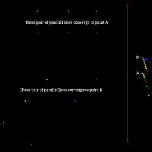
Vanishing point
Stas Fainer
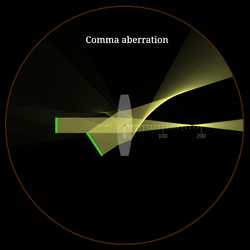
Monochromatic aberrations
Paul Falstad, Stas Fainer
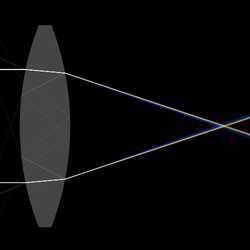
Chromatic aberration
Yi-Ting Tu
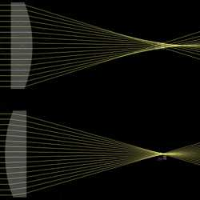
Orientations of plano-convex lens
Matthias Guillon
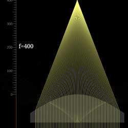
Hyperbolic lens
Stas Fainer

Fresnel lens
Stas Fainer, Yi-Ting Tu
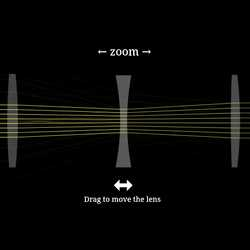
Zoom Lens
Paul Falstad
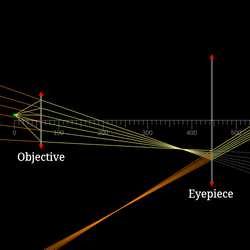
Compound Microscope
Yi-Ting Tu
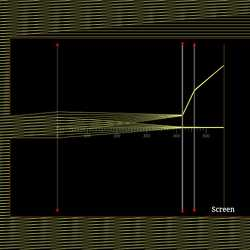
Telescope
Stas Fainer
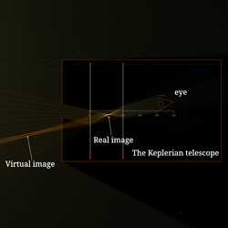
Keplerian telescope
chuangyu J

Expansores de feixe
Stas Fainer
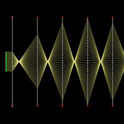
Ray relaying
Stas Fainer
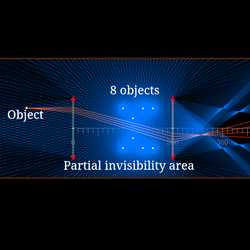
Rochester cloak
Stas Fainer

Simple Double-Gauss Lens
Alex
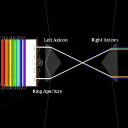
Pair of Axicons making a Rainbow Ring
Peter Becher
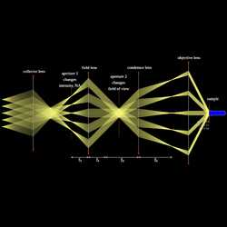
Köhler Illumination
Leon Seidel
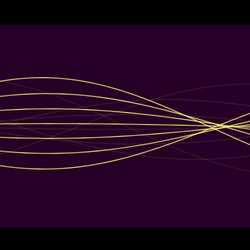
GRIN slab
Stas Fainer, Yi-Ting Tu
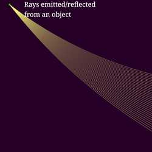
Inferior mirage
Stas Fainer
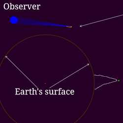
Sea mirage
chuangyu J
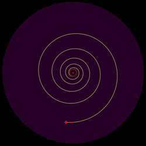
Logarithmic spiral ray path
Stas Fainer
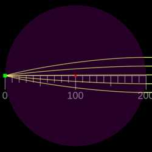
Luneburg lens
Stas Fainer, Yi-Ting Tu

Maxwell fisheye lens
Stas Fainer, Yi-Ting Tu
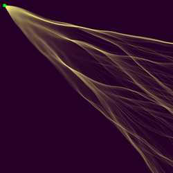
Branched flow
Yi-Ting Tu

Single Ray demo
Yi-Ting Tu
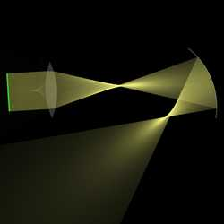
Spherical Lens and Mirror
Yi-Ting Tu
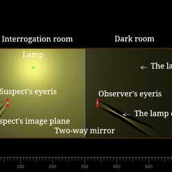
Interrogation room
Stas Fainer
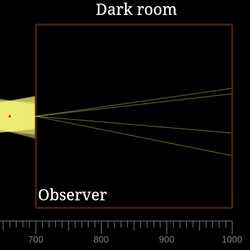
Camera obscura
Stas Fainer
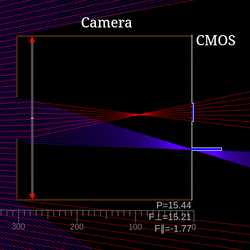
The principle of camera imaging
Liu Quanhong

NL Binoculars
Wen Zhou
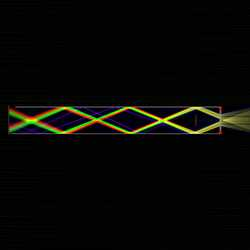
Einstein Ring refocused to Single Image via Eyepiece
Jordan Anderson
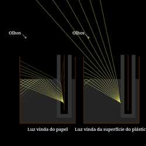
Demonstração "Gato preto se torna branco"
Victory Science, Yi-Ting Tu
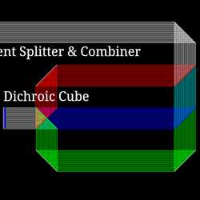
Dichroic RGB Splitter & Combiner
James Garrard
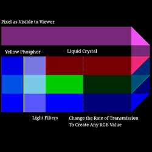
LCD Pixel
James Garrard
Concave Mirror Wearable Display
Rene
Reflecting Monochromator
James Garrard
Solar Eclipses
Yi-Ting Tu